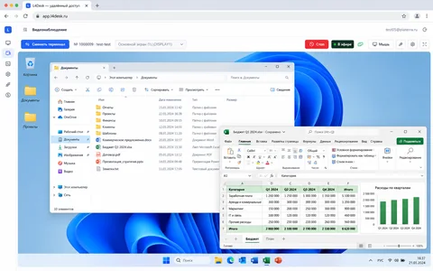
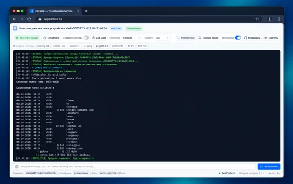
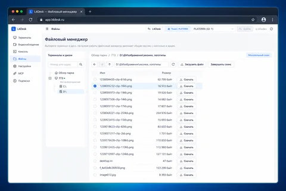
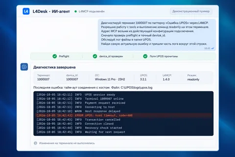

01 / ЭКРАН
Удалённый ПК — рядом
Работайте с экраном Windows, мышью и клавиатурой прямо из браузера.


L4DESK / БРАУЗЕРНОЕ РАБОЧЕЕ МЕСТО
Ваше рабочее место для всего парка Windows — в одной вкладке. Управляйте удалённым экраном, выполняйте команды и работайте с файлами устройств прямо из браузера.
Откройте браузер на компьютере или смартфоне — и приступайте. Без установки приложения у оператора.
ПК, терминалы и серверы вашей организации
01 / ВОЗМОЖНОСТИ
Выберите устройство и инструмент под задачу. Посмотреть экран, проверить систему или найти файл — без перехода между разными сервисами.
01 / ЭКРАН
Работайте с экраном Windows, мышью и клавиатурой прямо из браузера.

02 / КОНСОЛЬ
Запускайте команды и читайте вывод. Код завершения помогает проверить результат.

03 / ФАЙЛЫ
Выбирайте устройство, открывайте папки, загружайте и скачивайте файлы.

04 / AI-АГЕНТ
Подключите своего AI-агента через L4MCP для адресной диагностики устройств.

02 / НОВОЕ В L4DESK
Файловый менеджерЗнакомая логика Проводника Windows — для удалённых устройств. Выберите машину, откройте диск и перейдите к нужной папке. Весь управляемый парк доступен из одного окна.
Открыть свой паркОТ УСТРОЙСТВА К НУЖНОМУ ФАЙЛУ
Обзор парка и дерево дисков помогают быстро перейти к нужной машине.
Навигация по каталогам и адресная строка — привычный путь к файлам.
Заберите лог для разбора или передайте файл на выбранное устройство.
Доступ к файлам зависит от прав и политики устройства. Файловый менеджер, консоль и экран используют общий сеанс: переключайтесь между инструментами последовательно.
03 / L4MCP И API
Подключите своего AI-агента к удалённым устройствам через L4MCP. Встраивайте работу с парком в собственные процессы через API.
Агент выполняет команды на выбранной машине, получает вывод и код завершения. Сохраняет результаты и возвращается к истории устройства в следующем сеансе — даже когда оно офлайн.
Создавайте задачи для устройств, отслеживайте доставку и принимайте события результата. Соединяйте L4Desk с мониторингом, поддержкой и собственной системой автоматизации.
Отправленная команда и подтверждённый результат — разные этапы. Проверяйте вывод и события устройства перед следующим действием.
Планируем библиотеки промптов и скриптов под типовые задачи диагностики.
Инструкции организации, знания о парке и сохранённые сводки для следующих проверок.
Направления развития; сроки пока не объявлены.
04 / ПОДКЛЮЧЕНИЕ
Комплект L4Desk устанавливается на управляемом Windows-устройстве. Всё остальное — в вашем браузере.
Зарегистрируйтесь, добавьте устройство в парк и получите PIN подключения.
Установщик l4setup развернёт утилиты и проверит готовность устройства.
Дождитесь статуса online. Выберите экран, консоль или файловый менеджер.
05 / ДОСТУП И БЕЗОПАСНОСТЬ
Сертификаты устройств и взаимная TLS-аутентификация на MQTT/HTTPS и медиасоединениях.
Авторизация пользователей, API-токены для интеграций и изоляция данных по организации.
Инструменты работают с выбранным устройством и учитывают права доступа и локальные политики.
ДАВАЙТЕ НАЧНЁМ
Расскажите, какие устройства обслуживаете и что хотите попробовать. Поможем обсудить ваш сценарий.
info@l4desk.ruСервис в экспериментальном preview.